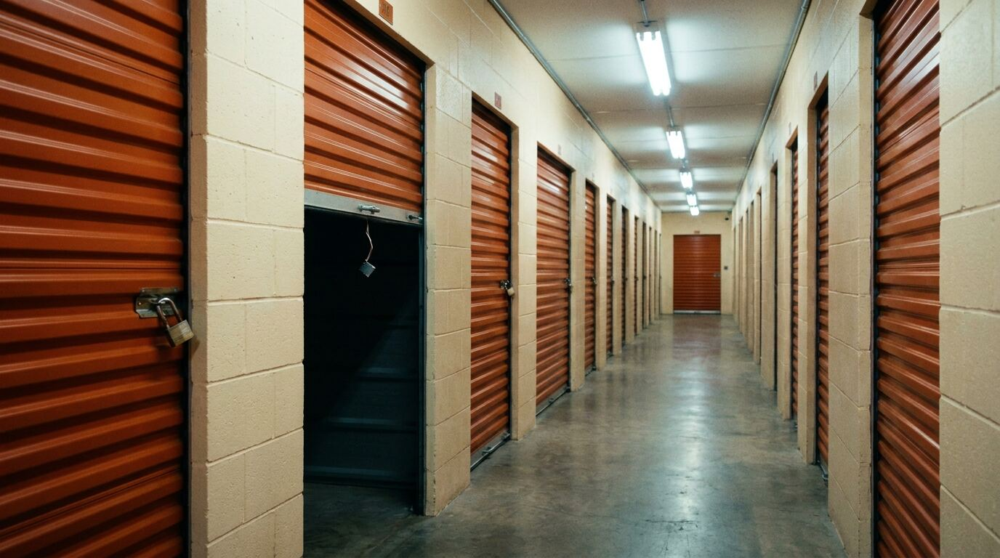
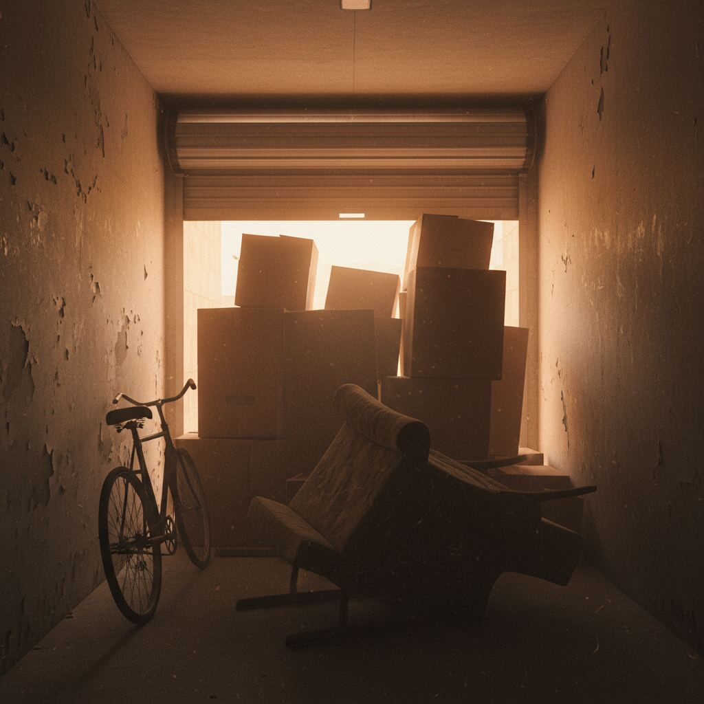

When the rent stops, the locker opens.
A plain-English guide to how abandoned storage units get auctioned — plus a working directory of where to bid, and what to do if it’s your stuff and you’d like it back before they sell it.
How a storage unit ends up on the auction block
Miss enough rent and the facility puts a lien on your unit. After a legally-required notice window — usually 30 to 90 days depending on the state — they cut the lock, photograph the contents through the open door, and sell the whole unit to the highest bidder. Most of it happens online now. Some places still do the in-person, walk-up auctions you’ve seen on TV.
The industry runs on a handful of platforms. The facility uploads photos of the door rolled up. Bidders bid sight-unseen. Winner pays, hauls everything out within 24 to 72 hours, broom-sweeps the unit, and the cycle resets the next month.
New York and California both follow self-storage lien statutes (NY Lien Law §182 and California Business & Professions Code §21700 et seq.) — the windows, the notice requirements, and the right to redeem before the gavel falls are written into law. Treat the dates on any notice you receive as load-bearing.
What you’re actually buying
Sight-unseen
Most platforms only show photos taken from the doorway. You can’t go inside until you win and pay. Bring a flashlight to the pickup.
All-or-nothing
You buy the entire unit, including the junk. Plan for dump fees. The math only works if you can flip enough of the contents.
Clock starts at win
Facilities typically give you 24–72 hours to remove everything. Miss the window and they keep your cleanout deposit — or worse, the unit.

Where to find NYC storage auctions
Manhattan, Brooklyn, Queens, Bronx, Staten Island. The five boroughs run through the same handful of platforms — most online, a few still on-site. Bookmark all of them; inventory rotates daily.
-
The biggest directory in the country. Filter by ZIP, set saved searches, watchlist units before they go live. Most active NYC platform by volume.
-
CubeSmart’s own NY facilities. The page lists upcoming sale dates by location — useful if you want to bid in person.
-
Used by a long tail of independent NY facilities that don’t have their own auction page. Strong inventory in Queens and Brooklyn.
-
Free to register. Lists NY auctions with photos, sizes, and last-bid prices so you can calibrate before jumping in.
-
Pulls scheduled sales from public lien notices across NY. Subscribe to ZIP-code alerts; useful for spotting on-site sales the bigger platforms miss.
Where to find SF Bay Area storage auctions
SF proper, Oakland, San Mateo, San Jose, Hayward. Bay Area lien sales mix national platforms with a couple of long-running regional auctioneers who still run live calendars.
-
Best single page for an at-a-glance view of upcoming SF sales. Filter by city and subscribe to alerts before you go.
-
Filter to the Bay. Security Public Storage and several SF-area operators run their online auctions through StorageTreasures.
-
Old-school caravan auctions. Calendar includes Bay Area facilities like Army St Self Storage in SF and All American Self Storage in San Mateo. Show up early.
-
Serves dozens of NorCal facilities. Schedule page lists dates, addresses, and the auctioneer on site. Bring cash.
-
Used by independents that don’t want to deal with on-site logistics. Good Bay Area coverage; sortable by ZIP.
If it’s your stuff: settle before the gavel
Almost every facility would rather get paid than run an auction. Auctions are a last resort — they cost the facility time, lien-service fees, and lost rent. Before they list your unit, call the manager and ask what number makes this go away.
You can often negotiate down to a fraction of what’s owed, especially if you commit to clearing the unit on a specific date. Bring cash or a card and a truck. Done.
If the unit is already scheduled for sale, ask whether you can still redeem it. Most state lien laws give you a window right up until bidding opens. Call. Don’t email. Don’t wait.
“Hi — I’m the tenant on unit ___. I see it’s on the auction list. I can be there tomorrow with payment if we can settle the balance. What’s your best number?” The call that has worked, more than once.
Buyer’s playbook
The short version, for the back of your phone case before you drive to a sale.
- Bring
- Cash · padlock · gloves · flashlight · tape measure · truck or van
- Budget
- Bid amount + sales tax + cleanout deposit (typically $50–$200, refundable)
- Time
- 24–72 hours to empty the unit after winning
- Avoid
- Sealed boxes labeled in marker (usually the bait). Look at the back wall.
- Flip
- Furniture, tools, and electronics resell fastest. Clothes and paper are dead weight.
More cities coming.
NYC and SF first. LA, Chicago, Houston, Miami, Atlanta, Philly, Seattle, Boston, Dallas, DC next. Listings sourced from StorageTreasures, CubeSmart, Lockerfox, SelfStorageAuction.com, StorageAuctions.net, Sale Maker, and Nor Cal Storage Auctions — availability changes daily, so always verify on the platform before bidding.
Browse NYC auctions